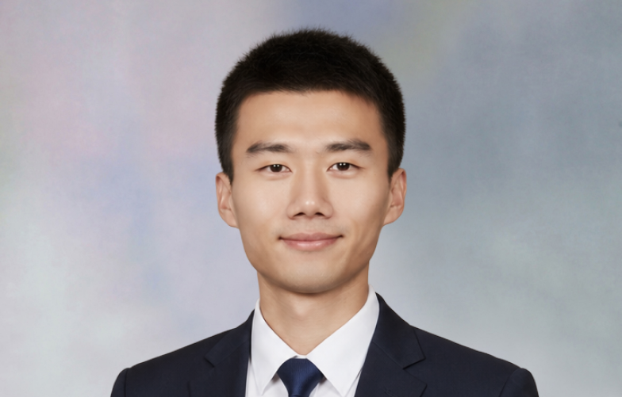
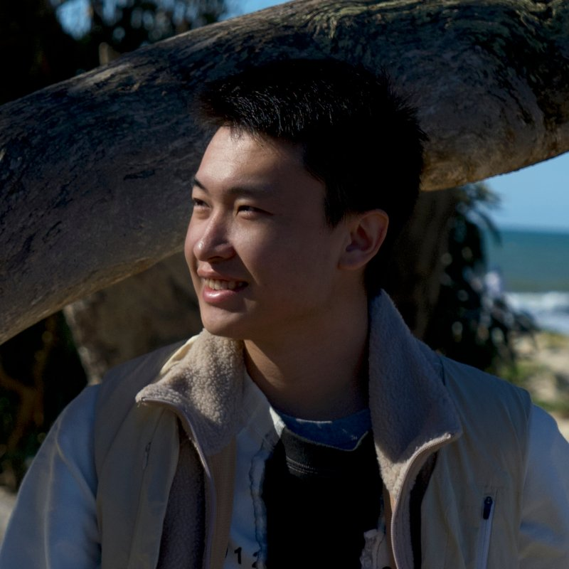

Minhyuk Sung is an Associate Professor in the Department of AI Computing at KAIST and is also affiliated with the School of Computing and the Graduate School of AI. He was previously a Research Scientist at Adobe Research. He earned his Ph.D. from Stanford University, where he was advised by Leonidas J. Guibas. His recent research spans the theoretical foundations of generative modeling, its applications across diverse modalities including scientific data, and its connections to policy learning. He has served on program committees for conferences in computer graphics (SIGGRAPH, SIGGRAPH Asia, Eurographics, and Pacific Graphics), machine learning (NeurIPS, ICML, ICLR, and AAAI), and computer vision (CVPR, ICCV, and 3DV). He will serve as the Technical Communications Chair for SIGGRAPH Asia 2027. He received the 2024 Asiagraphics Young Researcher Award.

Yi Zhou is a Staff Applied Scientist at Adobe, where she works on foundation models. Her current interests include agentic 3D and 4D content creation, game generation, and 3D-aware video models, building on her research in digital humans, motion synthesis, and 3D representation learning. She previously worked at Roblox and Adobe Research, and earned her Ph.D. at the University of Southern California under the supervision of Hao Li.

Kai Wang is an Assistant Professor of Computer Science at ShanghaiTech University, where he leads the Structure, Functionality and Creativity Lab. His research explores how to generate and analyze 3D shapes and scenes, with an emphasis on structure, functionality, and AI tools that support human creativity. He earned his Ph.D. at Brown University, advised by Daniel Ritchie, and subsequently worked with Hao Zhang as a postdoctoral scientist at Amazon and a visiting researcher at Simon Fraser University.

Hong Kong University of Science and Technology
Yuan Liu is an Assistant Professor at the Hong Kong University of Science and Technology, where he leads the Intelligent Graphics Lab. His work in 3D vision and graphics covers reconstruction, asset generation, motion capture and generation, video world models, and agents powered by large language models. He earned his Ph.D. at the University of Hong Kong with Wenping Wang and Taku Komura, then conducted postdoctoral research at Nanyang Technological University with Ziwei Liu.

Chunchao Guo leads Hunyuan 3D at Tencent, where his research focuses on 3D generative models and world models. He has led the development of 3D generation systems used in gaming and social platforms and overseen the release of HunyuanWorld, an open-source model for creating 3D worlds.

University of British Columbia
Peter Yichen Chen is an Assistant Professor of Computer Science at the University of British Columbia, where he directs the PhysAI Lab. He develops simulators of the 3D physical world, combining AI with physics to support applications in science and engineering. His work connects computer graphics, machine learning, scientific computing, and robotics. Before joining UBC, he was a postdoctoral researcher at MIT and earned his Ph.D. in Computer Science from Columbia University.

Panelist · Closing panel
Moonlake AI
Yitong Deng is at Moonlake AI. His research lies at the intersection of computer graphics, computational physics, and machine learning, with a focus on physically grounded numerical methods that simulate the motion of real-world objects faithfully and efficiently. His paper on fluid simulation on neural flow maps received a Best Paper Award at SIGGRAPH Asia 2023. He pursued his Ph.D. in Computer Science at Stanford University, advised by Ron Fedkiw, and previously received his M.S. from Dartmouth College, where he worked with Bo Zhu, and his B.A. summa cum laude from Colby College.